For some primitive data types, NDR defines several data representations. For example, NDR defines ASCII and EBCDIC formats for characters. When a client or server sends an RPC PDU, the formats used are identified in the format label of the PDU. The data representation formats and the format label support the NDR multi-canonical approach to data conversion; that is, there is a fixed set of alternate representations for data types.
This chapter describes:
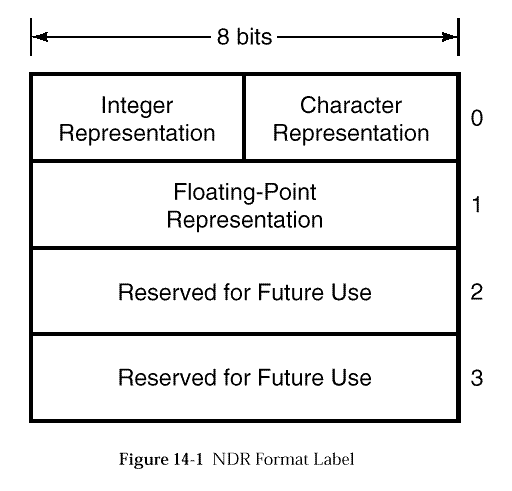
| Data Type | Value in Label | Format |
|---|---|---|
| Character | 0 | ASCII |
| 1 | EBCDIC | |
| Integer and floating-point byte order | 0 | Big-endian |
| 1 | Little-endian | |
| Floating-point representation | 0 | IEEE |
| 1 | VAX | |
| 2 | Cray | |
| 3 | IBM |
NDR defines a set of 13 primitive data types to represent Boolean values, characters, four sizes of signed and unsigned integers, two sizes of floating-point numbers, and uninterpreted octets.
For characters, integers and floating-point numbers, NDR defines more than one representation format. The formats used in an RPC PDU are identified in the NDR format label.
All NDR primitive data types are multiples of octets in length. A octet is 8 bits. A bit can take the values 0 and 1.
The figures representing NDR primitive types adopt the following conventions:
Following the preceding rules, the order of octets, as they occur in an
octet stream, can be read by reading vertically from the top octet box
down to the bottom octet box. The order of bits and groups of bits in
an octet, from most significant to least significant, can be read
beginning at the leftmost end of an octet box and reading across to
the right end. The order of bits and groups of bits in the octets of
a data type can therefore be read by reading the bits from left to
right in each octet, beginning with the top octet and ending with the
bottom octet.
NDR enforces NDR alignment of primitive data; that is, any primitive of size n octets is aligned at a octet stream index that is a multiple of n. (In this version of NDR, n is one of {1, 2, 4, 8}.) An octet stream index indicates the number of an octet in an octet stream when octets are numbered, beginning with 0, from the first octet in the stream. Where necessary, an alignment gap, consisting of octets of unspecified value, precedes the representation of a primitive. The gap is of the smallest size sufficient to align the primitive.
A Boolean is a logical quantity that assumes one of two values: TRUE or FALSE. NDR represents a Boolean as one octet. It represents a value of FALSE as a zero octet, an octet in which every bit is reset. It represents a value of TRUE as a non-zero octet, an octet in which one or more bits are set.
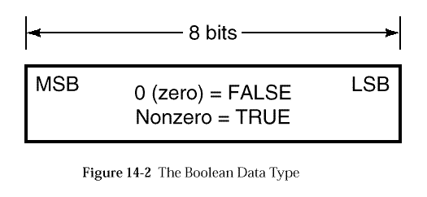
NDR represents a character as one octet. Characters have two representation formats: ASCII and EBCDIC.
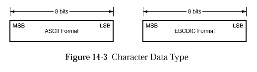
NDR defines both signed and unsigned integers in four sizes:
NDR represents signed integers in twos complement format and represents unsigned integers as unsigned binary numbers. There are two integer formats: big-endian and little-endian. If the integer format is big-endian, the octets of the representation are ordered in the octet stream from the most significant octet to the least significant octet. If the integer format is little-endian, the octets of the representation are ordered in the octet stream from the least significant octet to the most significant octet.
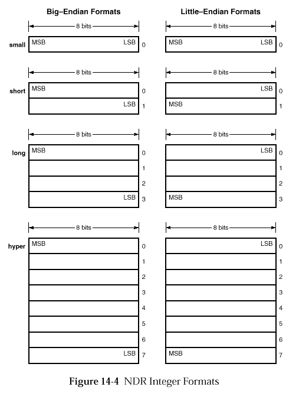
NDR represents enumerated types as signed short integers (2 octets).
NDR defines single-precision and double-precision floating-point data types. It represents single-precision types in 4 octets and double precision types in 8 octets.
NDR supports the following floating-point data representation formats for single-precision and double-precision floating-point types:
| NDR Values | Conversion Values | |||
|---|---|---|---|---|
| IEEE | VAX | Cray | IBM | |
| Single | Single (4 octets) | F (4 octets) | Single (4 octets) | Short (4 octets) |
| Double | Double (8 octets) | G (8 octets) | Double (8 octets) | Long (8 octets) |
The representation of a floating-point number comprises three fields:
NDR allows implementations to use different degrees of precision in representing floating-point numbers. When the receiver is unmarshaling a floating-point number, and the number cannot be represented exactly in the receiver's floating-point format, the received (input) data is rounded such that the representable value nearest the infinitely precise result is delivered. If two representable values are equally near, the one with its least significant bit 0 (zero) is delivered.
The integer representation field of the NDR format label
indicates whether floating-point values are transmitted in big-endian
or little-endian format. See
The remainder of this section describes how floating-point numbers are represented in the octet stream in IEEE, VAX, Cray and IBM formats.
Single-precision IEEE floating-point format is 32 bits in length, consisting of a 1-bit sign, an 8-bit exponent field (excess 127), and a 23-bit mantissa that represents a fraction in the range 1.0<=m<2.0. Double precision IEEE floating-point format is 64 bits in length with a 1-bit sign, an 11-bit exponent (excess 1023), and a 52-bit mantissa.
IEEE floating-point numbers are used on machines made by a variety of manufacturers and based on a variety of architectures. Some of these machines use little-endian representation for integers; other machines use big-endian representation. When a recipient interprets an NDR octet stream whose format label specifies IEEE floating-point format, it uses the integer representation in the format label to determine the octet order of the IEEE floating-point number.
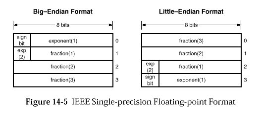
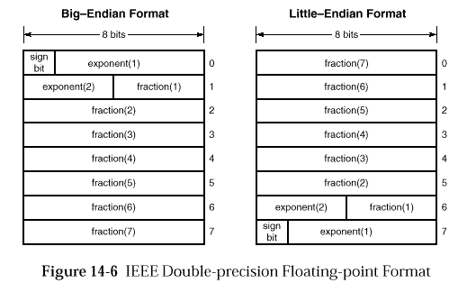
VAX architecture defines four floating-point formats: F_floating, D_floating, G_floating and H_floating. F_floating format is 32 bits in length, including a 1-bit sign, an 8-bit exponent (excess 128), and a 23-bit mantissa that represents a fraction in the range 0.5<=m<1.00. D_floating format is 64 bits, with a 1-bit sign, an 8-bit exponent and a 56-bit mantissa. G_floating format is also 64 bits, with a 1-bit sign, an 11-bit exponent (excess 1024) and a 52-bit mantissa. H_floating format is 128 bits.
Although the VAX architecture supports four floating-point formats, NDR uses only VAX F_floating format to represent VAX single-precision floating-point numbers and VAX G_floating format to represent VAX double-precision floating-point numbers.
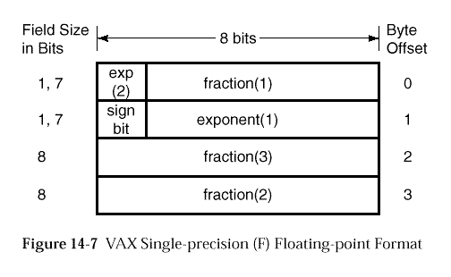
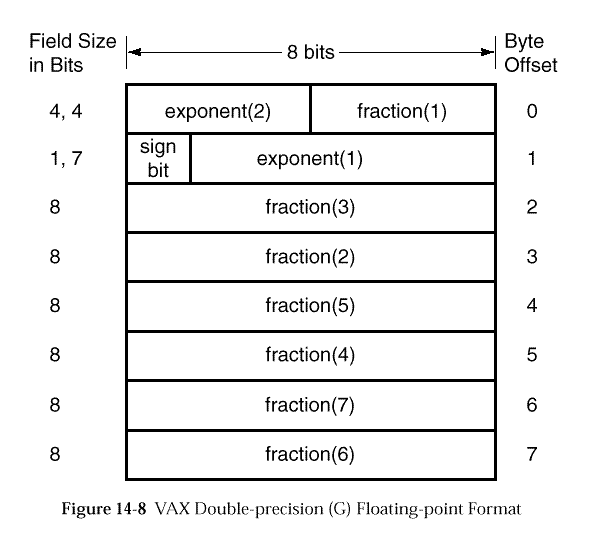
Cray machine architecture defines only a double-precision floating-point format. However, because Cray machines may be required to handle single-precision floating-point values (for instance, if single-precision values are specified in an interface definition), NDR defines a single-precision floating-point format for Cray machines; this format is identical to IEEE big-endian single-precision format.
A Cray double-precision floating-point number is 64 bits in length and consists of a 1-bit sign, a 15-bit exponent (16,384 excess) and a 48-bit fraction. A Cray single-precision floating-point number is 32 bits in length and consists of a 1-bit sign, an 8-bit exponent (excess 127) and a 23-bit mantissa that represents a fraction in the range 1.0<=m<2.0.
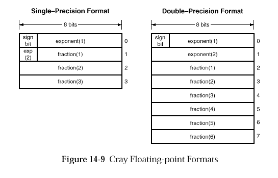
The IBM architecture defines short and long floating-point formats for single-precision and double-precision floating-point values, respectively. An IBM short floating-point number consists of a 1-bit sign, a 7-bit exponent and a 24-bit fraction. An IBM long floating-point number consists of a 1-bit sign, a 7-bit exponent and a 56-bit fraction. The IBM formats represent both the exponent and the fraction in hexadecimal rather than binary notation. Consequently, the exponent is base 16, while the fraction is composed of either six 4-bit hexadecimal digits or fourteen 4-bit hexadecimal digits.
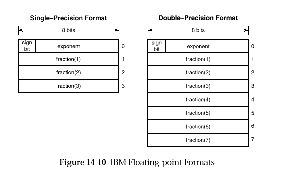
NDR defines an uninterpreted octet data type for which no internal format is defined and on which no format conversions are made.
illustrates the uninterpreted octet type as it appears in the octet stream.
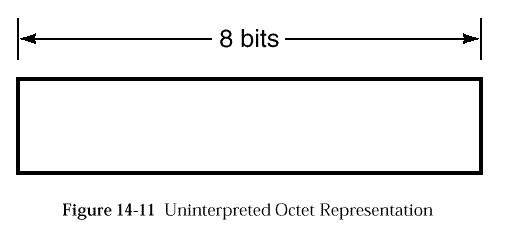
NDR supports data types that are constructed from the NDR primitive data types described in the previous section. The NDR constructed types include arrays, strings, structures, unions, variant structures, pipes and pointers.
NDR represents every NDR constructed type as a sequence of NDR primitive values. The representation formats for these primitive values are identified in the NDR format label.
All NDR constructed data types are integer multiples of octets in length.
The figures representing NDR constructed types adopt the following conventions:
The rules for calculating the alignment of constructed types are as follows:
The above definitions of union alignment and array alignment apply only to the calculation the NDR alignment of a structure and do not apply to the actual NDR alignment of a union or an array. For example, the NDR alignment of a union is determined by the tag type and the arm actually to be transmitted, not the largest of the union arms. Similarly, the NDR alignment of an array is determined by the element type alignment, which would be the largest arm of the union in the case of an array of unions.
An array is an ordered, indexed collection of elements of a single type. The elements of an array can be of any NDR primitive or constructed type except arrays, pipes, conformant structures and context handles.
NDR defines several representations for arrays. The representation used depends on:
NDR defines special representations for arrays of strings (see
A fixed array is an array that is neither conformant nor varying. In a fixed array, the number of elements is known beforehand.
NDR represents a fixed array as an ordered sequence of representations of the array elements.
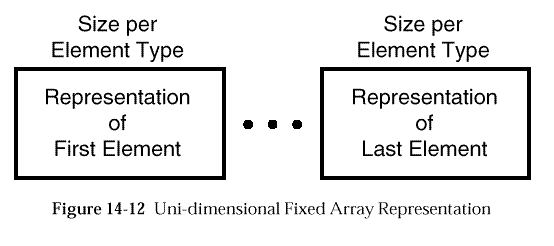
A conformant array is an array in which the maximum number of elements is not known beforehand and therefore is included in the representation of the array.
NDR represents a conformant array as an ordered sequence of representations of the array elements, preceded by an unsigned long integer. The integer gives the number of array elements transmitted, including empty elements.
A conformant array can contain at most 232-1 elements.
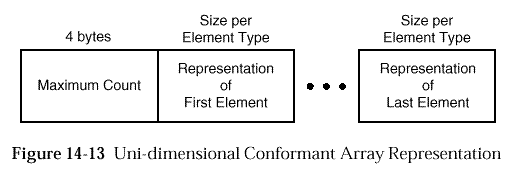
A varying array is an array in which the actual number of elements passed in a given call varies and therefore is included in the representation of the array.
NDR represents a varying array as an ordered sequence of representations of the array elements, preceded by two unsigned long integers. The first integer gives the offset from the first index of the array to the first index of the actual subset being passed. The second integer gives the actual number of elements being passed.
A varying array can contain at most 232-1 elements.
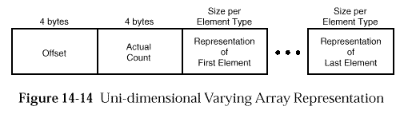
An array can be both conformant and varying. Such arrays are called conformant-varying.
NDR represents a conformant and varying array as an ordered sequence
of representations of the array elements, preceded by three unsigned
long integers. The first integer gives the maximum number of elements
in the array. The second integer gives the offset from the first index
of the array to the first index of the actual subset being passed.
The third integer gives the actual number of elements being passed.
A conformant and varying array can contain at most
232-1-o elements, where o is the offset.
The integers that
indicate the offset and the actual count are always present, even if
the maximum count is 0 (zero).
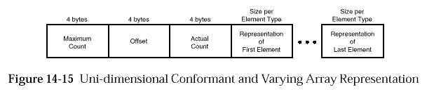
NDR orders multi-dimensional array elements so that the index of the first dimension varies slowest and the index of the last dimension varies fastest.
For example, consider an array A in two dimensions with indexes ranging from 0 to 1 in the first dimension and from 0 to 2 in the second dimension. NDR orders the elements of the array as follows:
where the notation A(i,j) denotes the element with index i in the first dimension and index j in the second dimension of the array A.
A multi-dimensional array is fixed if, in all of its dimensions, the number of elements is known beforehand.
NDR represents fixed multi-dimensional arrays in the same format as
fixed uni-dimensional arrays, as shown in
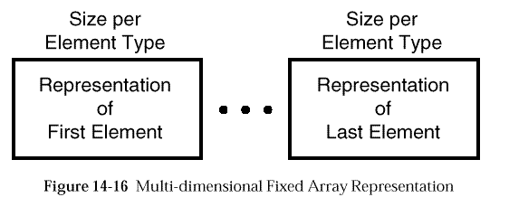
A multi-dimensional array is conformant if the maximum size in any of its dimensions is not known beforehand.
NDR represents a multi-dimensional conformant array as an ordered sequence of unsigned long integers, followed by an ordered sequence of representations of the array elements. The sequence of integers give the maximum size in each dimension of the array.
A multi-dimensional conformant array can span at most 232-1 elements in each dimension.
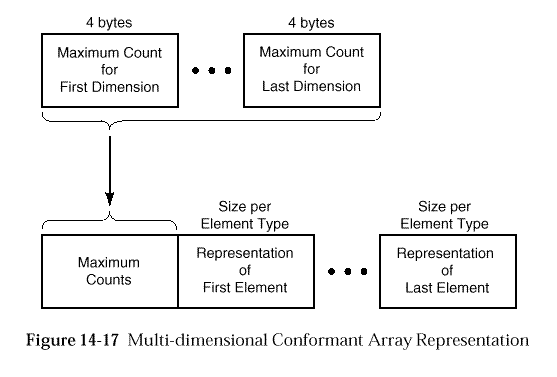
A multi-dimensional array is varying if the actual size in any of its dimensions varies.
NDR represents a multi-dimensional varying array as an ordered sequence of pairs of unsigned long integers, followed by an ordered sequence of representations of the array elements. There is one integer pair for each dimension of the array. The first integer of each pair gives the offset from the first index in the dimension to the first index of the subset being passed. The second integer of each pair gives the actual size in the dimension for the subset being passed.
A multi-dimensional varying array can span at most 232-1 elements in each dimension.
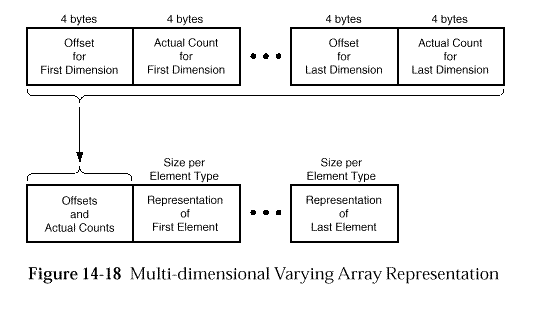
A multi-dimensional array can be both conformant and varying.
NDR represents a multi-dimensional conformant and varying array as an ordered sequence of unsigned long integers, followed by an ordered sequence of pairs of unsigned long integers, followed by an ordered sequence of representations of the array elements. In the sequence of integers, there is one integer for each dimension of the array, and the integers give the maximum size in each dimension. In the sequence of pairs of integers, there is one pair of integers for each dimension of the array; the first integer of each pair gives the offset from the first index in the dimension to the first index of the subset being passed, and the second integer of each pair gives the actual size in the dimension for the subset being passed.
Each dimension of a multi-dimensional conformant and varying array can span at most 232-1-o elements, where o is the offset in that dimension. The integers that indicate the offsets and the actual counts are always present, even if one or more of the maximum counts is 0 (zero).
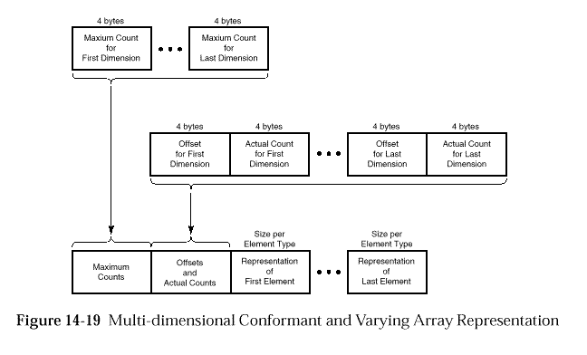
A string is an indexed or unindexed ordered collection of elements of the same type. The elements in a string must be characters, octets or structures all of whose elements are octets. The actual number of elements passed in a given call varies and therefore is included in the representation of the string.
The last element of a string is a terminator of the same size as the other elements. If the string element size is one octet, the terminator is a NULL character. The terminator for a string of multi-byte characters is the array element zero (0).
Strings can be varying or conformant and varying.
NDR represents a varying string as an ordered sequence of representations of the string elements, preceded by two unsigned long integers. The first integer gives the offset from the first index of the string to the first index of the actual subset being passed. The second integer gives the actual number of elements being passed, including the terminator.
A varying string can contain at most 232-1 elements and must contain at least one element, the terminator.
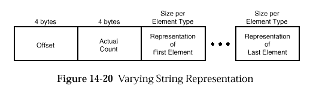
A conformant and varying string is a string in which the maximum number of elements is not known beforehand and therefore is included in the representation of the string.
NDR represents a conformant and varying string as an ordered sequence of representations of the string elements, preceded by three unsigned long integers. The first integer gives the maximum number of elements in the string, including the terminator. The second integer gives the offset from the first index of the string to the first index of the actual subset being passed. The third integer gives the actual number of elements being passed, including the terminator.
A conformant and varying string can contain at most 232-1-o elements, where o is the offset, and must contain at least one element, the terminator.
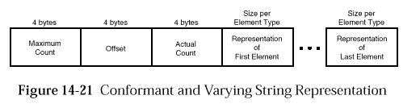
NDR defines a special representation for an array whose elements are strings.
In the NDR representation of an array of strings, any conformance information (maximum element counts) for the strings is removed from the string representations and included in the conformance information for the array, but any variance information (offsets and actual element counts) for the strings remains with the string representations.
NDR requires that all of the strings in an array of strings have the same maximum element count. In the representation of the array that has conformance information, the maximum element count for the strings appears only once, following the maximum element counts for the array.
An array of strings can have a degenerate form of the representation in
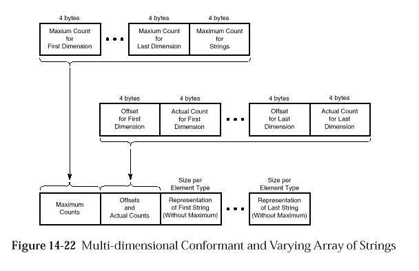
A structure is an ordered collection of members, not necessarily all of the same type. A structure member can be of any NDR primitive or constructed type. However, a conformant array can appear in a structure only as the last member, and a structure that contains a conformant array can appear in another structure only as the last member.
NDR represents a structure as an ordered sequence of representations of the structure members.
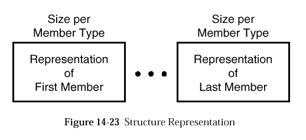
NDR defines special representations for a structure that contains a conformant array or a conformant and varying array.
A structure can contain a conformant array only as its last member.
In the NDR representation of a structure that contains a conformant array, the unsigned long integers that give maximum element counts for dimensions of the array are moved to the beginning of the structure, and the array elements appear in place at the end of the structure. If a structure that contains a conformant array itself a member of another structure, the maximum element counts are further moved to the beginning of the containing structure. This construction iterates through all enclosing structures.
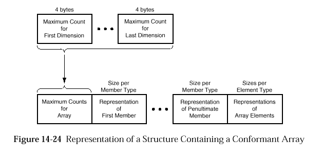
A structure can contain a conformant and varying array only as its last member.
In the NDR representation of a structure that contains a conformant and varying array, the maximum counts for dimensions of the array are moved to the beginning of the structure, but the offsets and actual counts remain in place at the end of the structure, immediately preceding the array elements. If a structure that contains a conformant and varying array is itself a member of another structure, the maximum counts are further moved to the beginning of the containing structure. This construction iterates through all enclosing structures.
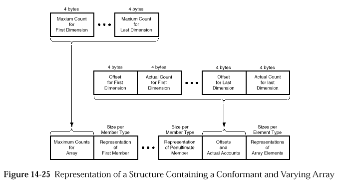
A union is a collection of members, not necessarily of the same type, from which one member is selected in any given instance by a discriminating tag. A union member can be of any NDR primitive or constructed type except pipes. A union tag can be of any NDR integer, character or Boolean type.
NDR represents a union as a representation of the tag followed by a representation of the selected member.
For a non-encapsulated union, the discriminant is marshalled into the
transmitted data stream twice: once as the field or parameter, which
is referenced by the switch_is construct, in the procedure argument
list; and once as the first part of the union representation,
as shown in
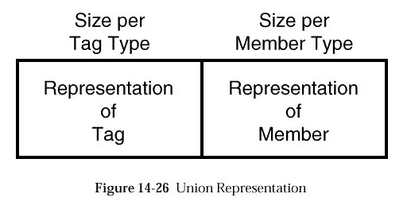
A pipe is an ordered sequence of elements, all of the same type; the number of elements in a pipe is determined dynamically and is potentially unlimited. Elements in a pipe can be of any NDR primitive or constructed type except pipes, conformant and/or varying arrays, and structures that contain conformant and/or varying arrays.
NDR represents a pipe as a sequence of chunks, not necessarily all containing the same number of elements. A chunk can contain at most 232-1 elements of the pipe. The number of chunks is potentially unlimited. NDR represents each chunk as an ordered sequence of representations of the elements in the chunk, preceded by an unsigned long integer giving the number of elements in the chunk. The final chunk is empty; it contains no elements and consists only of an unsigned long integer with the value 0 (zero).
The NDR representation of a pipe can be regarded as a sequence of representations of one-dimensional conformant arrays, of length>0, terminated by a zero-length array.
A pipe cannot be an element of another pipe, an element of an array, a member of a structure or variant structure, or a member of a union.
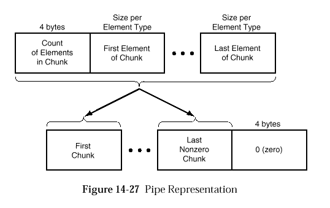
NDR defines two classes of pointers that differ both in semantics and in representation:
If a pointer points to nothing, it is null.
If the input and output octet streams pertaining to one remote procedure call contain several pointers that point to the same thing, the first of these pointers to be transmitted is considered primary and the others are considered aliases.
The scope of aliasing for a pointer extends to all streams transmitted in the service of one remote procedure call; that is, any inputs in the request that initiates the call, and any outputs in the response to the call.
Aliasing does not apply to null pointers.
We refer to pointers that are parameters in remote procedure calls as
top-level pointers and we refer to pointers that are elements of
arrays, members of structures, or members of unions as embedded
pointers. NDR defines different representations for top-level and
embedded pointers.
The following sections describe the NDR representation for pointers that are parameters in remote procedure calls.
NDR represents a null full pointer as an unsigned long integer with the value 0 (zero).
NDR represents the first instance in a octet stream of a non-null full pointer in two parts: the first part is a non-zero unsigned long integer that identifies the referent; the second part is the representation of the referent. NDR represents subsequent instances in the same octet stream of the same pointer only by the referent identifier.
Each referent in the input and output streams pertaining to one remote procedure call is associated with a referent identifier. A primary pointer and its aliases all have the same referent identifier.
On input to the call, if there are n distinct referents of full pointers, the n referent identifiers are chosen from the set of integers 1, . . ., n. On output from the call, if there are m new distinct referents, the referent identifiers for the new referents are chosen from the set n+1, . . .,n+m. Similar additions to the set of referent identifiers can also be made at each callback that occurs within the execution of the call.
These requirements extend to embedded full pointers as well.
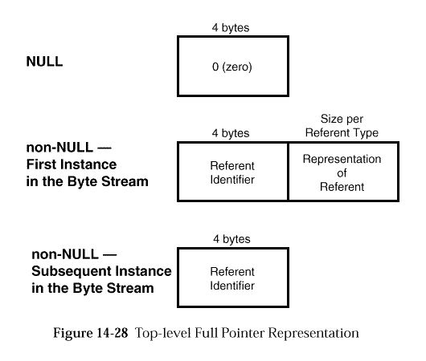
A reference pointer cannot be null; it must point to a referent.
NDR represents a top-level reference pointer simply as the representation of its referent.
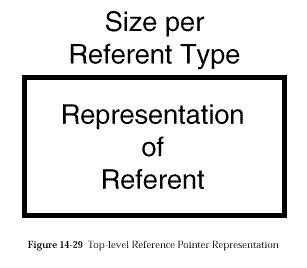
The following sections describe the NDR representation for pointers that are elements of arrays, members of structures or members of unions.
In the NDR representation of an embedded pointer, the representation of the pointer referent is sometimes deferred to a later position in the octet stream, while the pointer itself is always represented in place as part of the constructed type.
An embedded full pointer is represented by an unsigned long integer. If the pointer is null, the integer has the value 0 (zero). If the pointer is non-null, the integer is the referent identifier.
The representation of the referent of a primary pointer may
be deferred to a later position in the octet stream.
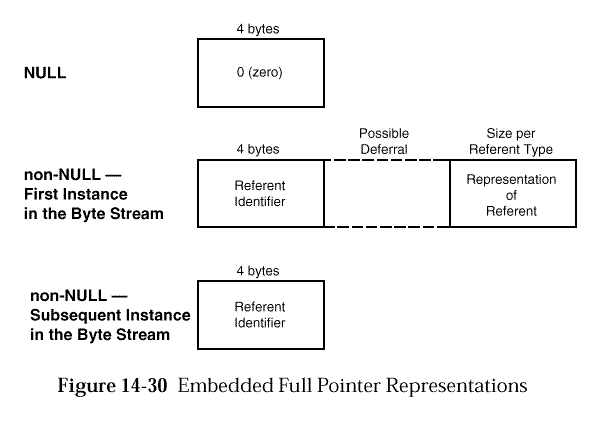
An embedded reference pointer is represented in two parts, a 4 octet value in place and a possibly deferred representation of the referent.
The reference pointer itself is represented by 4 octets of unspecified value. The four octets are aligned as if they were a long integer.
The special case of an array of reference pointers embedded in a structure has no NDR representation, that is; there is no 4-byte unspecified value transmitted.
The representation of the referent of the reference pointer may be
deferred to a later position in the octet stream.
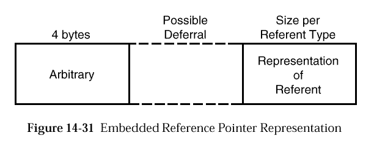
If a pointer is embedded in an array, structure or union, the representation of its referent is deferred to a position in the octet stream that follows the representation of the construction that embeds the pointer. Representations of pointer referents are ordered according to a left-to-right, depth-first traversal of the embedding construction. Following is an elaboration of the deferral algorithm in detail:
NDR represents the set of inputs or outputs in a remote procedure call as a octet stream. The octet stream consists of two parts: one part represents data that are pipes and the other part represents data that are not pipes. In the representation of a set of inputs, the part representing pipes appears last. In the representation of a set of outputs, the part representing pipes appears first.
Each part of the octet stream is aligned at an octet stream index that is a multiple of 8. To produce this alignment, a gap of octets of unspecified value may separate the two parts. The figures in this section do not show such gaps.
If an operation returns a result, the representation of the result appears after all parameters in the output stream.
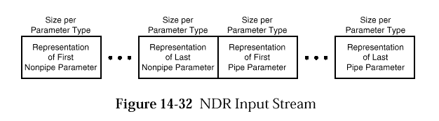
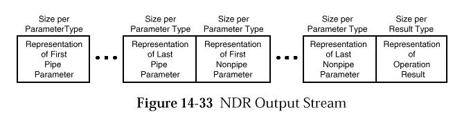
The octet stream representing a set of inputs or outputs is transmitted
either as the body of one PDU or as the bodies of several PDUs,
as described in
Please note that the html version of this specification may contain formatting aberrations. The definitive version is available as an electronic publication on CD-ROM from The Open Group.
| Contents | Next section | Index |